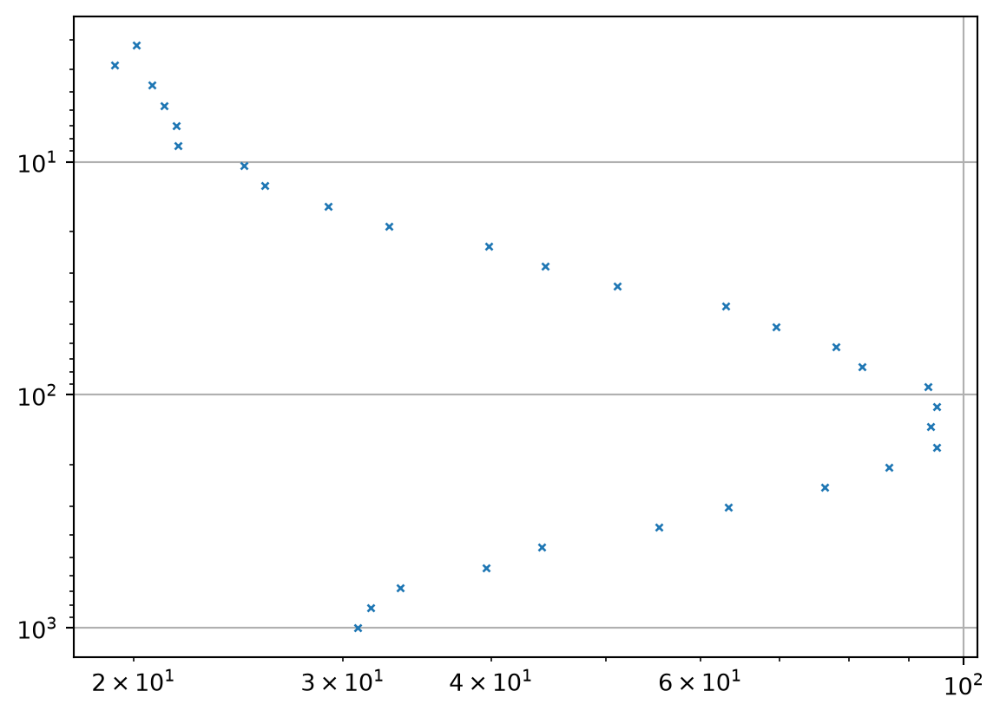
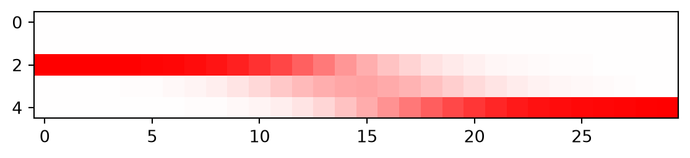
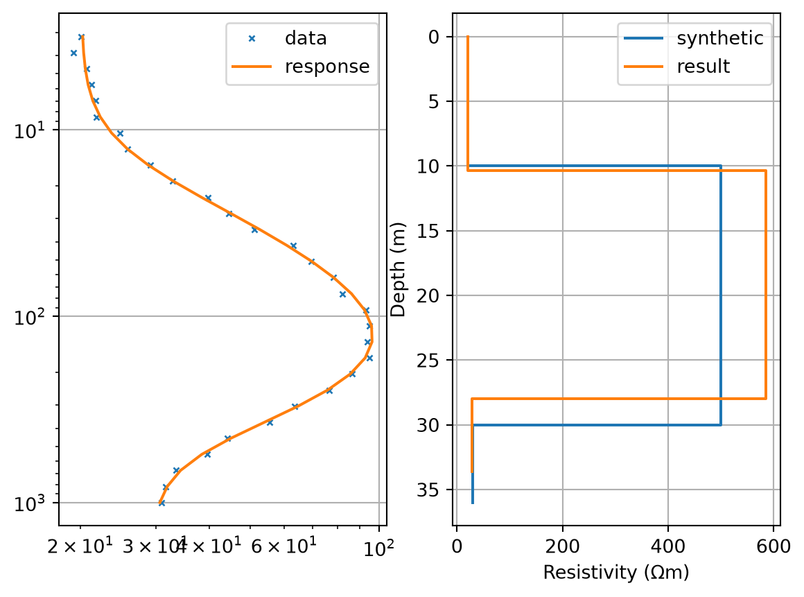
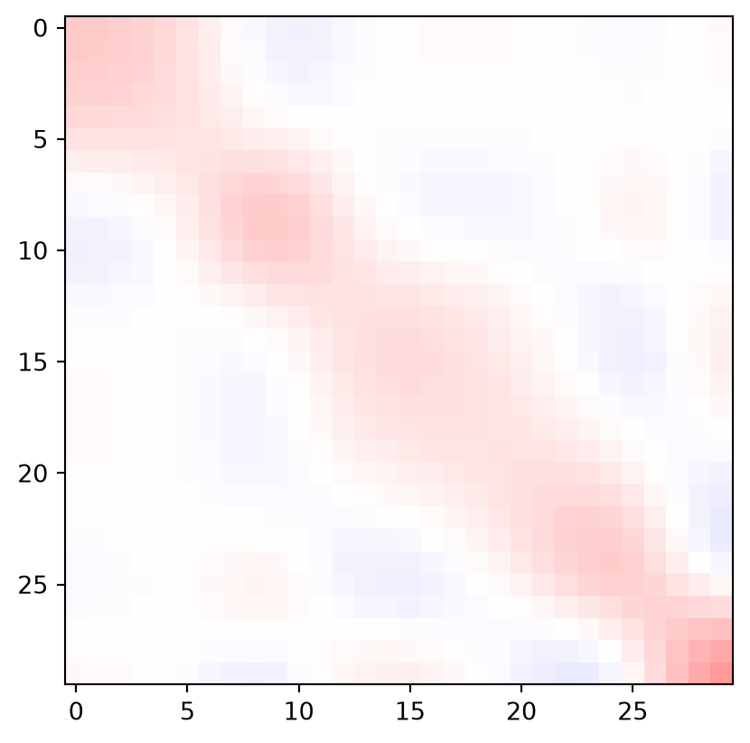
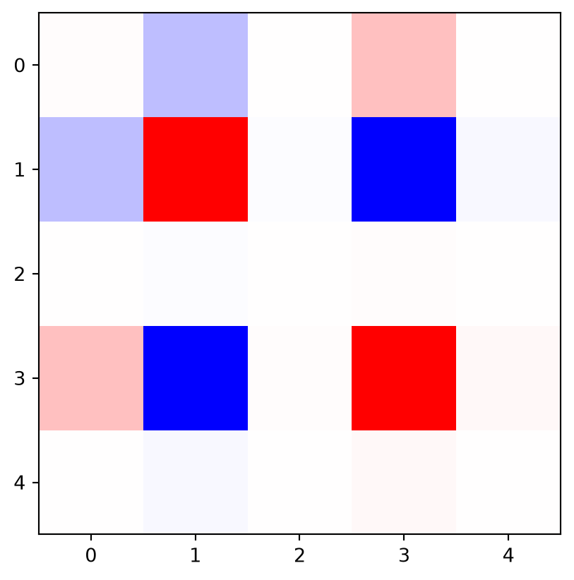
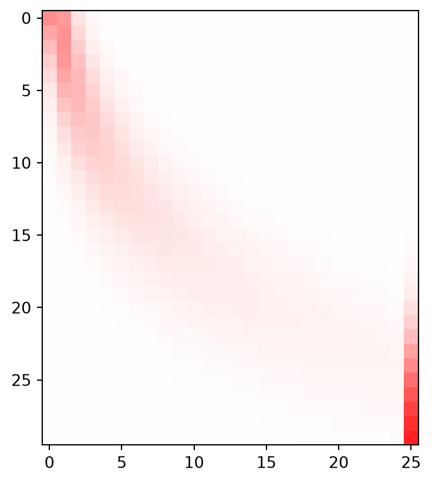
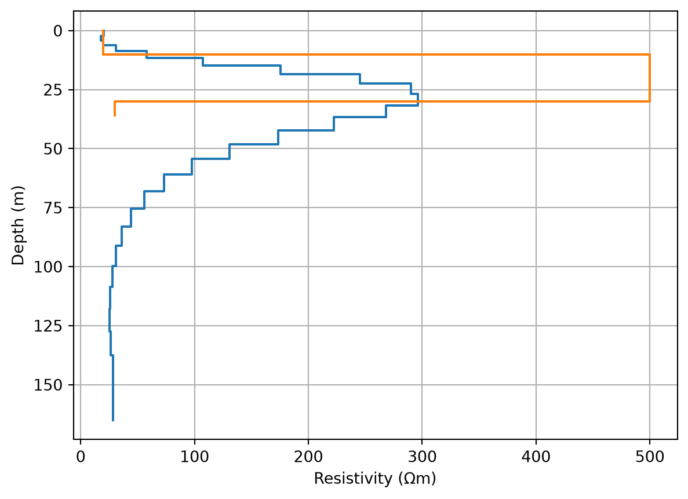
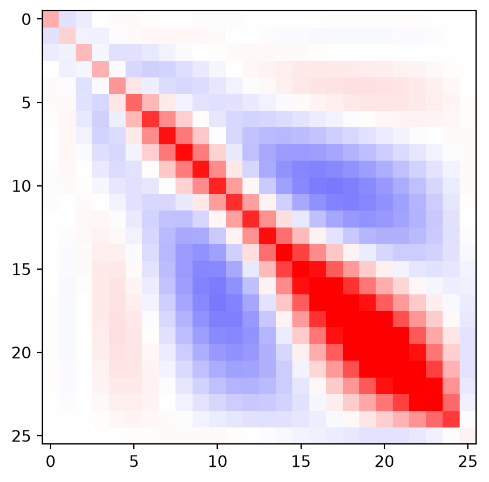
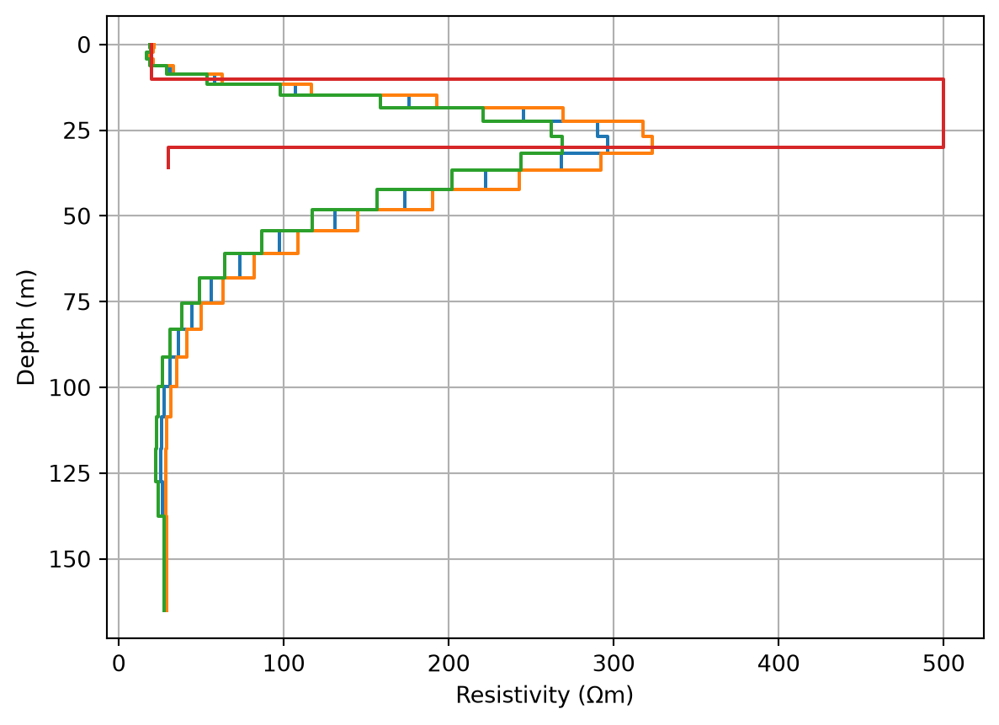
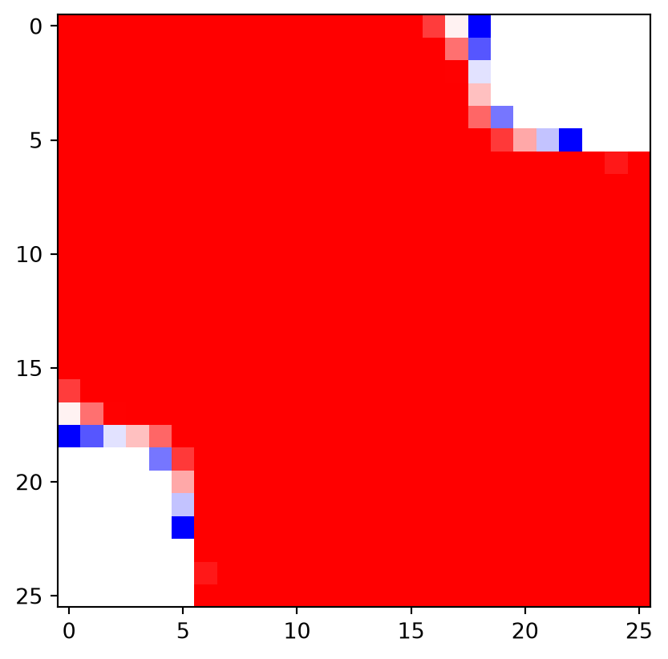

Show the code
from pygimli.physics.ves import VESModelling, VESRhoModelling
from pygimli.viewer.mpl import drawModel1DIn this example, we will exemplify non-linear minimization by using vertical electrical soundings in 1D. To this end, we import two types of forward operators:
VESModelling uses a block discretization of (few) \(N\) layer resistivities preceded by N-1 thickness valuesVESRhoModelling uses a fixed (many) layer discretization that is adressed by smoothness constraintsfrom pygimli.physics.ves import VESModelling, VESRhoModelling
from pygimli.viewer.mpl import drawModel1DThe first is used for creating the synthetic model and to demonstrate the Levenberg-Marquardt algorithm. The second stands for all types of (also 2D and 3D) discretizations using a smoothness-constrained (Occam) inversion.
The experiment comprises a VES sounding with AB/2 values between 6m and 1km. The synthetic model consist of a 20m thick bad conductor embedded in rather conductive halfspace with 10m overburden. Gaussian noise with a relative error model of 3% is added to the data.
ab2 = np.logspace(0.5, 3, 30)
fBlock = VESModelling(ab2=ab2, mn2=ab2/3, nLayers=3)
error = 0.03
modelSynth = [10, 20, 20, 500, 30]
data = fBlock.response(modelSynth)
data *= np.random.normal(1, error, len(ab2))
print(data)30 [20.10031398650435, 19.285280180613743, 20.70921333444935, 21.225396603306915, 21.711556039105048, 21.791605171042136, 24.778786629622413, 25.807569846331464, 29.152273476215004, 32.80348808652795, 39.81522538958459, 44.434703674388224, 51.04798900244791, 63.0260374106197, 69.46844405199097, 78.05613018986324, 82.10567641316472, 93.28940766860225, 94.92128866075795, 93.72808236539834, 94.84657084495495, 86.46388261534905, 76.42414295359922, 63.3745445595783, 55.373609552393624, 44.098617865444346, 39.64773956163246, 33.51657122388123, 31.654869635586138, 30.897734642023284]fig, ax = plt.subplots()
ax.loglog(data, ab2, "x")
ax.invert_yaxis()
ax.grid()
The intrinsic model parameters and data are resistivity and apparent resistivity. For both data and model we use a logarithmic transform For computing the Jacobian by a Finite Difference (brute force) approach we write a function taking this into account:
def Jacobian(model, f):
J = np.zeros([len(ab2), len(model)])
responseLog = np.log(f(model))
for i in range(len(model)):
modelNew = model.copy()
modelNew[i] *= 1.1
J[:, i] = (np.log(f(modelNew))-responseLog) / (np.log(modelNew[i]) - np.log(model[i]))
return JIn deteministic non-linear minimization approaches we start from a starting model \(m^0\) and improve the model iteratively by adding a model update \(\Delta \vb m\) so that \(\vb m^{n+1}=\vb m^n+\Delta\vb m^n\), based on the data misfit \(\Delta \vb d=\vb d-\vb f(\vb m^n)\) and the Jacobian matrix \(\vb J=\pdv{f(\vb m)}{m}\). For stopping the inversion, several criteria are used:
In the following, we always use error-scaled properties, i.e. \(\vb J\), \(\vb d\) and \(\vb f\) are scaled by the relative data error.
This method is typical for small parameter numbers like curve fits or block models, where the parameters are not related to each other. It uses only a local damping the least-squares solution of the linearized inverse problem \(\vb J \Delta\vb m=\Delta \vb d\).
\[\Delta\vb m = (\vb J^T \vb J + \lambda \vb I)^{-1} (\vb J^\top (\vb d-\vb f(\vb m)))\]
The damping parameter \(\lambda\) is for stabilization in the early stage and decreased subsequently.
We start the inversion with a homogeneous model and compute its Jacobian matrix:
model = np.array([15, 15, 100, 100, 100])
J = Jacobian(model, fBlock)
plt.imshow(J.T, cmap="bwr", vmin=-1, vmax=1);
The thickness values show no sensitivity as the model is homogeneous. The three layers exhibit increased sensitivities for small, medium and large AB/2 values.
The inversion is then done by solving the damped normal equations in every iteration.
model = np.array([15, 15, 100, 100, 100])
I = np.eye(len(model))
lam = 100
for i in range(5):
response = fBlock(model)
J = Jacobian(model, fBlock) / error
dData = (np.log(data) - np.log(response)) / error
print("chi2 = ", np.mean(dData**2))
dm = np.linalg.inv(J.T@J + I*lam) @ (J.T@dData)
model = np.exp(np.log(model) + dm)
lam *= 0.8
print(model)chi2 = 1105.7509702652674
chi2 = 57.88737732082739
chi2 = 1.336691926256882
chi2 = 0.6248500946301451
chi2 = 0.6241902060824356
[ 10.32593963 17.65588032 20.10551963 585.20434986 29.03714183]We plot the data fit and the model along with the synthetic model
fig, ax = plt.subplots(ncols=2)
ax[0].loglog(data, ab2, "x", label="data")
ax[0].loglog(response, ab2, "-", label="response")
ax[0].invert_yaxis()
ax[0].legend()
ax[0].grid()
drawModel1D(ax[1], model=modelSynth, label="synthetic")
drawModel1D(ax[1], model=model, label="result")
ax[1].invert_yaxis()
ax[1].legend()
Let us start with the data resolution matrix
JTJ = J.T@J
DRM = J@np.linalg.inv(JTJ)@J.T
plt.imshow(DRM, cmap="bwr", vmin=-1, vmax=1);
The overall information content is 5, i.e. matching the number of resolved parameters. So the individual data are weaker and neighboring AB/2 are highly correlated.
As for the overdetemined problem the model resolution is perfect, we instead compute the model covariance \[ MCM = (\vb J^T \vb J + \lambda \vb I) \]
MCM = np.linalg.inv(JTJ)
print(np.sqrt(np.diag(MCM)))
plt.imshow(MCM, cmap="bwr", vmin=-1, vmax=1);[0.10172856 2.51392882 0.01426061 2.48916654 0.02248158]
We observe a strong anti-correlation between the second layer resistivity and thickness. In total, these show higher variances than the other three parameters that are well determined (the variance is also a relative one).
Here we use a predefined geometry (layers) with increasing layer thickness. This is passed to the forward operator in the initialization so that only the resistivity vector is passed to the forward routine. We start with a homogeneous resistivity and compute the Jacobian matrix
thk = np.linspace(1, 10, 25)
fSmooth = VESRhoModelling(thk, ab2=ab2)
res = np.ones(len(thk)+1) * 100
J = Jacobian(res, fSmooth)
plt.imshow(J, cmap="bwr", vmin=-1, vmax=1);08/07/26 - 11:02:02 - pyGIMLi - INFO - Found 1 regions.

We clearly see that increasing AB/2 values (rows) shift the sensitivity towards deeper layers (columns).
In the inversion, we use an explicit regularization using a roughness (gradient) operator \(\vb C\). In every iteration, we solve the regularized normal equation.
\[\Delta\vb m = (\vb J^T \vb J + \lambda \vb C^\top \vb C)^{-1} (\vb J^\top (\vb d-\vb f(\vb m)) - \lambda \vb C^\top \vb C \vb m)\]
Note the last term that arises when operating on the model itself and not only the update, i.e. the roughness of the model is taken into account.
res = np.ones(len(thk)+1) * 100
C = np.eye(len(res)-1, len(res), 0) - np.eye(len(res)-1, len(res), k=1)
CTC = C.T@C # only C.T C is needed
lam = 100
for i in range(6):
response = fSmooth(res)
J = Jacobian(res, fSmooth) / error
dData = (np.log(data) - np.log(response)) / error
print("chi2 = ", np.mean(dData**2))
dm = np.linalg.inv(J.T@J + CTC*lam) @ (J.T@dData - CTC@np.log(res))
res = np.exp(np.log(res) + dm)chi2 = 1105.7509702652674
chi2 = 16.02988451704807
chi2 = 2.5886092171756556
chi2 = 1.0129761734308722
chi2 = 0.7955631203862267
chi2 = 0.7102777318336846We use the function drawModel1D to plot the result along with the synthetic model. Note the two modes: a) specifying thickness and values, or b) a complete model vector with both included.
fig, ax = plt.subplots()
drawModel1D(ax, thk, res)
drawModel1D(ax, model=modelSynth)
ax.invert_yaxis()
We see that the upper boundary is resolved well, but the lower boundary is smeared, a typical problem in smoothness-constrained inversion. As above, we compute the model covariance:
JTJ = J.T@J
MCM = np.linalg.inv(JTJ + CTC*lam)
plt.imshow(MCM, cmap="bwr", vmin=-.01, vmax=.01)
var = np.sqrt(np.diag(MCM))
print(var)[0.05628251 0.04159579 0.05225765 0.05588155 0.06400605 0.07738092
0.08953005 0.09670334 0.09837569 0.09601253 0.09231448 0.09028962
0.09194251 0.09738785 0.10529129 0.11398935 0.12216795 0.12897342
0.13388629 0.13655216 0.13661181 0.13350901 0.12621273 0.11265094
0.08782893 0.02238185]
We have variances (of the logarithm, i.e. relative accuracies) in the order of 10% and can use them to have some upper and lower boundaries.
fig, ax = plt.subplots()
drawModel1D(ax, thk, res)
drawModel1D(ax, thk, res*(1+var))
drawModel1D(ax, thk, res*(1-var))
drawModel1D(ax, model=modelSynth)
ax.invert_yaxis()
We can also compute the model resolution matrix
MRM = np.linalg.inv(JTJ + CTC*lam) @ (JTJ)
plt.imshow(np.log(JTJ), cmap="bwr", vmin=-1, vmax=1)C:\Users\Thomas Guenther\AppData\Local\Temp\ipykernel_3524\4005960481.py:2: RuntimeWarning: invalid value encountered in log
plt.imshow(np.log(JTJ), cmap="bwr", vmin=-1, vmax=1)